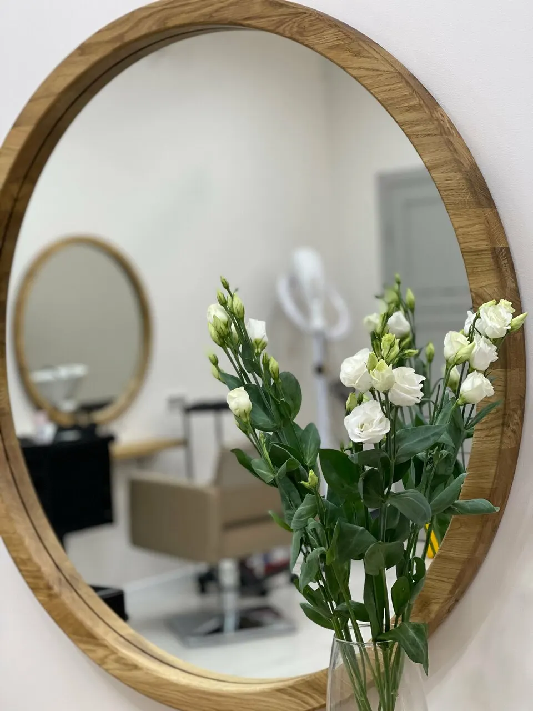
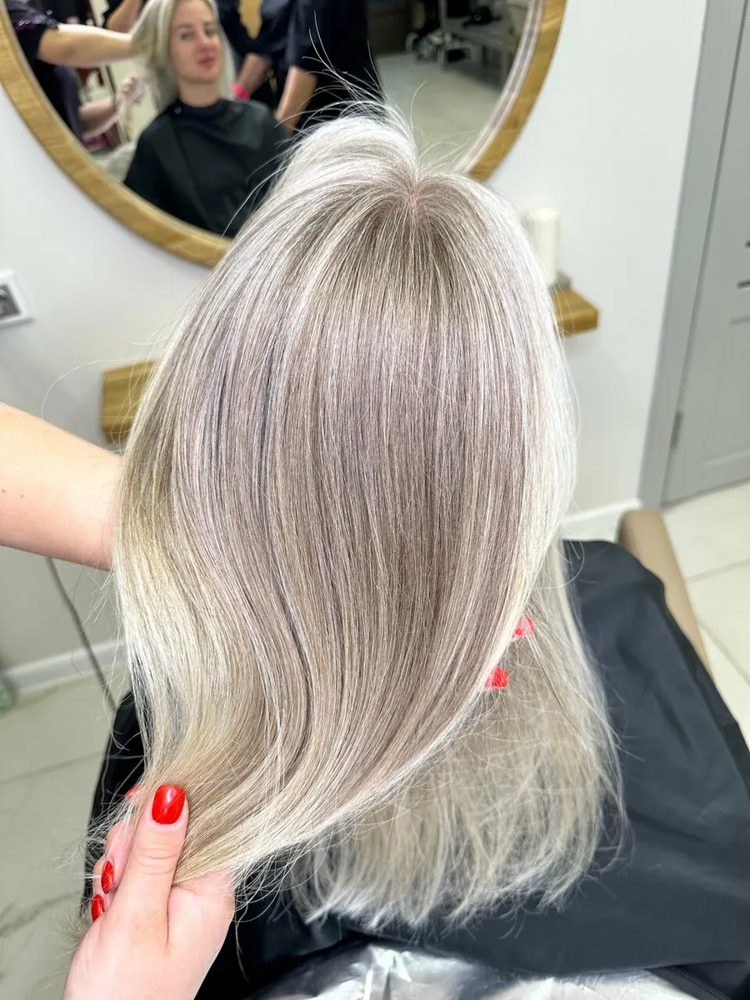
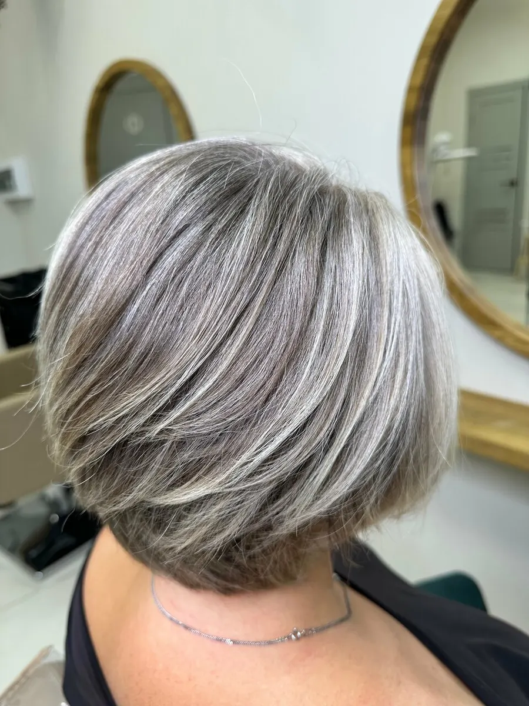
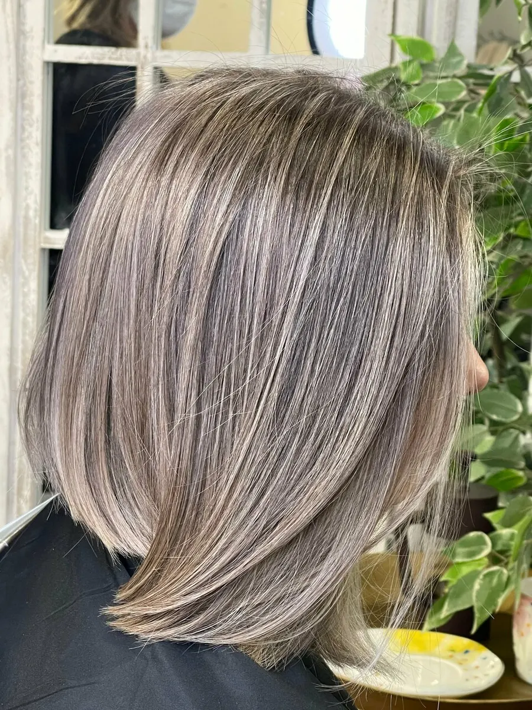

Окрашивание · шитьё седины · стрижки · уход
Студия окрашивания у МЦК Окружная: седина и блонд
Тонирование, сложное окрашивание и умные стрижки у колористов. В цену окрашивания уже входят консультация, мытьё, укладка и материалы.
- Рейтинг 5,0 на Яндекс.Картах
- Окрашивание «всё включено»: консультация, мытьё и укладка в цене
- Ежедневно 10:00–20:00, вход доступен на коляске

Цены – до записи, а не на кассе
Прайс с карточки студии на Яндекс.Картах. Цены окрашивания – для длины до плеч: на более длинные волосы дороже, цену назовёт колорист.
Окрашивание до плеч, всё включено
- Тонирование или окрашивание в один тон, мастерот 4 500 ₽
- Тонирование или окрашивание в один тон, ведущий колористот 5 500 ₽
- Тонирование или окрашивание в один тон, топ-колористот 7 000 ₽
- Сложное окрашивание, мастер-колористот 15 000 ₽
- Сложное окрашивание, ведущий колористот 20 000 ₽
- Airtouch в 4 руки, колористы-основателиот 30 000 ₽
Стрижки и уход
- Умная стрижка с укладкой, мастерот 2 000 ₽
- Стрижка с укладкой, ведущий мастерот 3 000 ₽
- Умная стрижка, топ-стилистот 4 000 ₽
- Уход dr. Sorbie с укладкойкороткие волосыот 5 000 ₽
Шитьё седины, контуринг и другие техники – после консультации колориста.
Как записаться
- 01
Выбираете услугу и время
В форме наверху страницы. Если ходите к своему мастеру – допишите его имя.
- 02
Отправляете в WhatsApp
Текст сообщения уже собран, остаётся нажать «Отправить».
- 03
Подтверждаем время
Отвечаем со свободным окном мастера.
- 04
Приходите в студию
Нововладыкинский проезд, 1к1, рядом с МЦК Окружная. Вход доступен на коляске.



Почему к колористам едут
Шитьё седины
В отзывах готовят волосы к шитью седины по чётким протоколам – и результат держится месяцами.
Бережно к сложным волосам
Клиентки пишут про щадящее окрашивание и уход для сухих и повреждённых волос.
Всё включено
Консультация, мытьё, укладка и материалы уже в цене окрашивания – так написано в прайсе.
Цену называют заранее
В отзыве: «предварительно были предложены варианты стрижки и озвучена цена».
Отзывы с Яндекс.Карт
«Прекрасное обслуживание. Отличный салон, еще и рядом с домом. Отдельное спасибо мастеру Оксане. Предварительно были предложены варианты стрижки и озвучена цена. Ну и качество на 5+. Не пожалела ни на секунду о посещении данного салона, обязательно вернусь снова. Спасибо!»
Елена Сигачева · 7 сентября 2026
«Очень бережное отношения к клиентам и их волосам. У меня сложные волосы, которые тяжело осветляются, сильно поврежденные и сухие после предыдущего окрашивания. Сделали щадящее окрашивание и уход, также в салоне широкая линейка эксклюзивных средств для домашнего ухода, которые помогают поддержать эффект. Очень рекомендую 🫶»
Даниела Хауверт · 5 августа 2026
«Девочки волшебницы! Если вы боретесь с сединой - не нужно! Дайте себе свободу! Мастера салона навсегда избавят вас от этой проблемы! Я очень скептически была настроена, но результат шикарный!!! Вот уже 4 месяца мое шитье седины выглядит превосходно! Рекомендую! Вкусный кофе в салоне, всегда аккуратно и чисто. Каре стригут аккуратно и четко! На фото мое до - после - 4 мес спустя!»
Наталия Клюшникова · 24 мая 2025
Отзывы с карточки на Яндекс.Картах, без правок.
Частые вопросы
Как вас найти?
Москва, Нововладыкинский проезд, 1, корпус 1 – рядом с МЦК Окружная. Вход доступен на коляске.
Сколько стоит окрашивание на длинные волосы?
В прайсе цены для длины до плеч. На длинные волосы дороже – колорист назовёт цену на консультации.
Делаете шитьё седины?
Да. Сначала консультация, потом колорист готовит волосы – так пишут клиентки в отзывах.
До скольки вы работаете?
Ежедневно с 10:00 до 20:00, по предварительной записи.
Напишите, на что и когда
- Адрес
- Нововладыкинский проезд, 1, корп. 1, Москва
- Часы
- Ежедневно 10:00–20:00
- Телефон
- +7 (965) 150-35-35